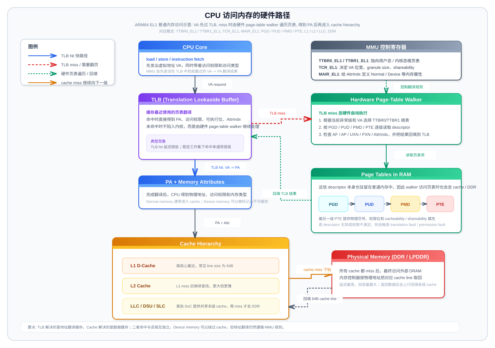

环境：Linux 6.18.1 / ARM64 / QEMU 1GB
内核配置：VA_BITS=52,PA_BITS=52,PGTABLE_LEVELS=5,CONFIG_NUMA=y,CONFIG_TRANSPARENT_HUGEPAGE_ALWAYS=y
编写视角：顶级 Linux ARM64 内存管理专家
学习方法论：每个知识点 = 原理图 + 核心代码 + QEMU 实验，数字建立直觉
graph TD
Z["第0课: head.S→start_kernel<br/>早期内存映射<br/>⏰ 3天"] --> A["第1课: ARM64 硬件基础<br/>MMU + Cache + TLB<br/>⏰ 3天"]
A --> B["第2课: 物理内存发现<br/>DTB → memblock<br/>⏰ 2天"]
B --> C["第3课: ARM64 页表层级<br/>5级: PGD→P4D→PUD→PMD→PTE<br/>⏰ 5天"]
C --> D["第4课: 虚拟地址空间<br/>用户态 + 内核态布局<br/>⏰ 3天"]
D --> E["第5课: struct page/folio<br/>物理页元数据<br/>⏰ 3天"]
E --> F["第6课: Buddy 伙伴系统<br/>页分配器<br/>⏰ 5天"]
F --> G["第7课: SLUB 分配器<br/>对象分配器<br/>⏰ 5天"]
G --> H["第8课: VMA 与 mmap<br/>进程虚拟内存管理<br/>⏰ 5天"]
H --> I["第9课: 缺页异常<br/>Demand Paging 全路径<br/>⏰ 5天"]
I --> J["第10课: 页面回收<br/>kswapd + LRU + watermark<br/>⏰ 7天"]
J --> K["第11课: 高级主题<br/>THP/Swap/OOM/CMA<br/>⏰ 7天"]
K --> L["第12课: 综合实战<br/>调试 + 性能分析<br/>⏰ 5天"]
style Z fill:#9C27B0,color:#fff
style A fill:#4CAF50,color:#fff
style C fill:#FF9800,color:#fff
style F fill:#2196F3,color:#fff
style G fill:#2196F3,color:#fff
style I fill:#FF9800,color:#fff
style J fill:#f44336,color:#fff紫色=启动映射 绿色=硬件基础 橙色=核心机制 蓝色=分配器 红色=回收（最难）
理解 ARM64 Linux 内核从上电到进入 C 语言世界的完整内存映射建立过程。从 head.S 汇编入口到 start_kernel()，再到 setup_arch() 中 paging_init() 完成最终页表切换的全路径。
内核镜像被 bootloader 加载到物理内存后，MMU 是关闭的（PA=VA），内核最终要运行在高地址虚拟空间（TTBR1），这个切换是怎么完成的？
答案分为三个阶段：
┌──────────────────────────────────────────────────────────────────────────────────┐
│ ARM64 内核启动页表三阶段演进 │
├──────────────────────────────────────────────────────────────────────────────────┤
│ │
│ 阶段1: MMU OFF → 创建 Identity Map │
│ ┌─────────────────────────────────────────────────────────────────────┐ │
│ │ primary_entry: │ │
│ │ x0 = FDT 物理地址（bootloader 传入） │ │
│ │ x19 = MMU 是否已开启标志 │ │
│ │ x21 = FDT 指针 │ │
│ │ │ │
│ │ bl create_init_idmap ← 在 init_idmap_pg_dir 中建立恒等映射 │ │
│ │ VA = PA，映射范围: _stext → _end │ │
│ │ text段: PAGE_KERNEL_ROX（只读可执行） │ │
│ │ data段: PAGE_KERNEL（可读写） │ │
│ │ │ │
│ │ bl __cpu_setup ← 配置 TCR/MAIR/SCTLR（但MMU还没开） │ │
│ │ b __primary_switch ← 跳入 MMU 开启流程 │ │
│ └─────────────────────────────────────────────────────────────────────┘ │
│ │ │
│ ▼ │
│ 阶段2: MMU ON → 创建内核虚拟映射 │
│ ┌─────────────────────────────────────────────────────────────────────┐ │
│ │ __primary_switch: │ │
│ │ TTBR0 ← init_idmap_pg_dir （恒等映射，物理地址=虚拟地址） │ │
│ │ TTBR1 ← reserved_pg_dir （临时空表，阻止内核空间访问） │ │
│ │ set_sctlr_el1 → 开启 MMU！ │ │
│ │ ↓ │ │
│ │ 此刻 PC 仍在低地址物理范围内运行（因为 TTBR0 恒等映射） │ │
│ │ ↓ │ │
│ │ bl early_map_kernel ← 在 init_pg_dir 中建立内核虚拟映射 │ │
│ │ 解析 FDT，处理 KASLR 随机化偏移 │ │
│ │ map_kernel() 按段映射到 KIMAGE_VADDR+offset: │ │
│ │ _text → _stext : PAGE_KERNEL (non-exec) │ │
│ │ _stext → _etext : PAGE_KERNEL_ROX (代码段) │ │
│ │ __start_rodata : PAGE_KERNEL (只读数据) │ │
│ │ __inittext : PAGE_KERNEL_ROX (init代码) │ │
│ │ _data → _end : PAGE_KERNEL (数据段) │ │
│ │ TTBR1 ← init_pg_dir → swapper_pg_dir（复制根页表） │ │
│ │ ↓ │ │
│ │ ldr x8, =__primary_switched ← 加载虚拟地址 │ │
│ │ br x8 ← 跳入！从此运行在高地址虚拟空间 │ │
│ └─────────────────────────────────────────────────────────────────────┘ │
│ │ │
│ ▼ │
│ 阶段3: C代码 → 最终页表 │
│ ┌─────────────────────────────────────────────────────────────────────┐ │
│ │ __primary_switched: │ │
│ │ 保存 kimage_voffset = _text(VA) - _text(PA) │ │
│ │ bl start_kernel │ │
│ │ → setup_arch() │ │
│ │ → cpu_uninstall_idmap() ← TTBR0 指向空页表，卸载恒等映射 │ │
│ │ → arm64_memblock_init() ← 物理内存注册到 memblock │ │
│ │ → paging_init() ← ★ 最终页表建立！ │ │
│ │ map_mem(swapper_pg_dir) ← 建立完整线性映射 │ │
│ │ 遍历所有 memblock.memory 区域 │ │
│ │ __map_memblock() 映射到 PAGE_OFFSET 线性区 │ │
│ │ create_idmap() ← 重建精确的 idmap_pg_dir │ │
│ │ declare_kernel_vmas() ← 声明内核 VMA 区域 │ │
│ │ → bootmem_init() ← zone/node 初始化，buddy 启动 │ │
│ └─────────────────────────────────────────────────────────────────────┘ │
└──────────────────────────────────────────────────────────────────────────────────┘ ┌────────────────────┬───────────────────────┬──────────────────────────────────────┐
│ 页表目录名 │ 用途 │ 生命周期 │
├────────────────────┼───────────────────────┼──────────────────────────────────────┤
│ init_idmap_pg_dir │ 恒等映射 (PA=VA) │ head.S 创建 → setup_arch 卸载 │
│ │ MMU 开启瞬间使用 │ TTBR0 使用 │
├────────────────────┼───────────────────────┼──────────────────────────────────────┤
│ reserved_pg_dir │ 空页表（安全占位） │ 切换 TTBR1 时临时使用 │
│ │ 防止野指针访问 │ 全程保留 │
├────────────────────┼───────────────────────┼──────────────────────────────────────┤
│ init_pg_dir │ 早期内核映射 │ early_map_kernel 创建 │
│ │ 内核镜像虚拟映射 │ 根页表复制到 swapper_pg_dir 后废弃 │
├────────────────────┼───────────────────────┼──────────────────────────────────────┤
│ swapper_pg_dir │ ★ 最终内核页表 │ early_map_kernel 初始化（从init复制）│
│ │ 内核镜像 + 线性映射 │ paging_init 完善，永久使用 │
│ │ │ TTBR1 使用 │
├────────────────────┼───────────────────────┼──────────────────────────────────────┤
│ idmap_pg_dir │ ★ 最终恒等映射 │ paging_init → create_idmap() 创建 │
│ │ 仅映射 .idmap.text 段 │ CPU hotplug/suspend 时 TTBR0 使用 │
└────────────────────┴───────────────────────┴──────────────────────────────────────┘补充理解：这一节除了记住“谁在什么时候用”，还要记住“它到底是几级页表、叶子条目是 block 还是 page”。
PAGE_SIZE=4KB、VA_BITS=52、CONFIG_PGTABLE_LEVELS=5，Linux 命名层次是 PGD → P4D → PUD → PMD → PTEPGD=256TB，P4D=512GB，PUD=1GB，PMD=2MB，PTE=4KBPUD 的 1GB block 和 PMD 的 2MB block；真正的页映射是 PTE 的 4KB pageidmap 不是 52-bit 五级，而是固定 48-bit 四级：源码里 IDMAP_VA_BITS=48，IDMAP_ROOT_LEVEL = 4 - 4 = 0，因此 init_idmap_pg_dir / idmap_pg_dir 的根表位于 level 0（即 P4D 层），遍历路径为 P4D→PUD→PMD→PTE，不需要顶层 PGD（level -1）create_init_idmap() / map_kernel() 走的是 arch/arm64/kernel/pi/map_range.c 这套 PI 建表器：idmap 侧从 level 0 开始（四级），内核主映射侧从 level -1 开始（五级）；PI 建表器的叶子只在 level 2 放 PMD 2MB block 或 level 3 放 PTE 4KB page（level < 2 时一律递归，因此 PI 建表器不会产生 PUD 1GB block）paging_init() 的 swapper_pg_dir 走通用建表器 __create_pgd_mapping()：在 4KB 页配置下会优先尝试 PUD 1GB block 或 PMD 2MB block，只有需要更细粒度权限、边界切分或后续拆分时才下沉到 PTE 4KB pagereserved_pg_dir 只是空根表，只负责占位，不承载实际叶子映射| 页表目录 | 生命周期阶段 | 级数骨架 | 实际叶子映射模式 |
|---|---|---|---|
init_idmap_pg_dir |
head.S 早期恒等映射 |
4 级 (root 在 level 0 即 P4D→PUD→PMD→PTE；无 PGD) |
以 PMD 2MB block 为主，必要时降到 PTE 4KB page |
reserved_pg_dir |
MMU 刚打开时给 TTBR1 占位 |
只有根表占位 | 无实际映射 |
init_pg_dir |
early_map_kernel() 早期内核镜像映射 |
5 级 | 以 PMD 2MB block 为主，段边界/权限切分处用 PTE 4KB page |
swapper_pg_dir |
early_map_kernel() 初始化，paging_init() 完善 |
5 级 | 最终内核页表，优先 PUD 1GB block / PMD 2MB block，必要时 PTE 4KB page |
idmap_pg_dir |
paging_init() 后的最终 idmap |
4 级 (IDMAP_ROOT_LEVEL=0，即 P4D→PUD→PMD→PTE，无 PGD) |
只覆盖 .idmap.text 一小段，通常是 PMD block，不够对齐时退化为 PTE page |
;; 寄存器约定（贯穿整个 boot 流程）：
;; x19 = MMU 是否已开启（EFI stub 可能已开启 MMU）
;; x20 = CPU boot mode（EL1 or EL2）
;; x21 = FDT 物理地址指针
SYM_CODE_START(primary_entry)
bl record_mmu_state ;; 读取 CurrentEL，记录 MMU 开/关状态到 x19
bl preserve_boot_args ;; 保存 x0-x3（bootloader 传参）到 boot_args[]
;; 设置早期栈（汇编阶段需要栈来调用 C 函数）
adrp x1, early_init_stack
mov sp, x1
mov x29, xzr ;; frame pointer = 0（栈回溯终止点）
;; ★ 核心：创建恒等映射页表
adrp x0, __pi_init_idmap_pg_dir ;; x0 = 页表目录物理地址
mov x1, xzr ;; clrmask = 0
bl __pi_create_init_idmap ;; → map_range() 递归建表
;; Cache 一致性处理
cbnz x19, 0f ;; 如果 MMU 已开启，走 clean 路径
dmb sy ;; MMU 关闭：需要 invalidate cache
...dcache_inval_poc... ;; 清除可能的投机加载缓存行
b 1f
0: ...dcache_clean_poc... ;; MMU 已开启：clean .idmap.text 段
1: mov x0, x19
bl init_kernel_el ;; 确定运行在 EL1 还是 EL2，返回 boot mode
mov x20, x0
bl __cpu_setup ;; ★ 配置 MMU 相关寄存器（但还不开 MMU）
b __primary_switch ;; 跳入 MMU 开启 + 内核映射流程
SYM_CODE_END(primary_entry) SYM_FUNC_START(__cpu_setup)
tlbi vmalle1 ;; 清空所有 TLB 条目
dsb nsh
;; ★ 配置 MAIR_EL1（内存属性索引寄存器）
;; 定义 5 种内存类型：
;; MT_DEVICE_nGnRnE (idx=0) : 严格设备内存
;; MT_DEVICE_nGnRE (idx=1) : 设备内存（允许 Early Write Ack）
;; MT_NORMAL_NC (idx=2) : 普通内存，不缓存
;; MT_NORMAL (idx=3) : ★ 普通内存，Write-Back 缓存
;; MT_NORMAL_TAGGED (idx=4) : MTE 标签内存
mov_q mair, MAIR_EL1_SET
msr mair_el1, mair
;; ★ 配置 TCR_EL1（翻译控制寄存器）
;; TCR_T0SZ = 64 - IDMAP_VA_BITS → TTBR0 翻译范围
;; TCR_T1SZ = 64 - VA_BITS_MIN(48) → TTBR1 翻译范围
;; TCR_TG0 = 4KB granule → TTBR0 页大小
;; TCR_TG1 = 4KB granule → TTBR1 页大小
;; TCR_SHARED | TCR_CACHE_FLAGS → Inner/Outer WB-WA cacheable
;; TCR_IPS = 根据 MMFR0 动态计算 → 物理地址位数
mov_q tcr, TCR_T0SZ(...) | TCR_T1SZ(...) | ...
msr tcr_el1, tcr
;; 准备 SCTLR_EL1（返回值，__enable_mmu 中写入）
mov_q x0, INIT_SCTLR_EL1_MMU_ON
ret ;; 返回 head.S，x0 = SCTLR 值
SYM_FUNC_END(__cpu_setup) SYM_FUNC_START_LOCAL(__primary_switch)
adrp x1, reserved_pg_dir ;; x1 = TTBR1 临时空页表
adrp x2, __pi_init_idmap_pg_dir ;; x2 = TTBR0 恒等映射页表
bl __enable_mmu ;; ★ 开启 MMU！
;; ── 从此刻起，CPU 使用虚拟地址 ──
;; 但因为 TTBR0 是恒等映射，PA=VA，所以代码继续正常执行
adrp x1, early_init_stack
mov sp, x1
mov x29, xzr
mov x0, x20 ;; boot status
mov x1, x21 ;; FDT 指针
bl __pi_early_map_kernel ;; ★ 建立内核虚拟映射
ldr x8, =__primary_switched ;; ★ 加载虚拟地址（高地址！）
adrp x0, KERNEL_START ;; __pa(KERNEL_START)
br x8 ;; ★ 跳入虚拟地址空间！
SYM_FUNC_END(__primary_switch)
;; ────────────────────────────────────
SYM_FUNC_START(__enable_mmu)
;; 检查页粒度支持
mrs x3, ID_AA64MMFR0_EL1
ubfx x3, x3, #TGRAN_SHIFT, 4
cmp x3, #TGRAN_SUPPORTED_MIN
b.lt __no_granule_support ;; 不支持则停机
;; ★ 加载页表基址到 TTBR 寄存器
phys_to_ttbr x2, x2
msr ttbr0_el1, x2 ;; TTBR0 ← init_idmap_pg_dir
load_ttbr1 x1, x1, x3 ;; TTBR1 ← reserved_pg_dir
;; ★★★ 写入 SCTLR_EL1，开启 MMU ★★★
set_sctlr_el1 x0 ;; M位=1, C位=1, I位=1
ret ;; 返回后 CPU 已在虚拟地址模式
SYM_FUNC_END(__enable_mmu) asmlinkage void __init early_map_kernel(u64 boot_status, phys_addr_t fdt)
{
/* 1. 清零 BSS + 初始页表 */
memset(__bss_start, 0, (char *)init_pg_end - (char *)__bss_start);
/* 2. 解析 FDT 中的 CPU feature overrides */
void *fdt_mapped = map_fdt(fdt); // 在恒等映射中映射 FDT
init_feature_override(boot_status, fdt_mapped, chosen);
/* 3. 确定实际 VA_BITS（可能因硬件不支持降级） */
int va_bits = VA_BITS; // 52
int root_level = 4 - CONFIG_PGTABLE_LEVELS; // 4 - 5 = -1
/* 4. KASLR 随机化偏移计算 */
u64 kaslr_offset = pa_base % MIN_KIMG_ALIGN;
if (CONFIG_RANDOMIZE_BASE) {
kaslr_seed = kaslr_early_init(fdt_mapped, chosen);
kaslr_offset |= kaslr_seed & ~(MIN_KIMG_ALIGN - 1);
}
/* 5. LPA2 支持处理（52-bit PA 需要特殊 TCR.DS 位） */
if (CONFIG_ARM64_LPA2 && va_bits > VA_BITS_MIN)
remap_idmap_for_lpa2();
/* 6. ★ 核心：建立内核虚拟映射 */
u64 va_base = KIMAGE_VADDR + kaslr_offset;
map_kernel(kaslr_offset, va_base - pa_base, root_level);
} static void __init map_kernel(u64 kaslr_offset, u64 va_offset, int root_level)
{
phys_addr_t pgdp = (phys_addr_t)init_pg_dir + PAGE_SIZE;
/* 按段映射内核镜像到 init_pg_dir */
map_segment(init_pg_dir, &pgdp, va_offset,
_text, _stext, PAGE_KERNEL, ...); // 非执行头部
map_segment(init_pg_dir, &pgdp, va_offset,
_stext, _etext, PAGE_KERNEL_ROX, ...); // ★ 代码段：只读可执行
map_segment(init_pg_dir, &pgdp, va_offset,
__start_rodata, __inittext_begin,
PAGE_KERNEL, ...); // 只读数据（含异常表）
map_segment(init_pg_dir, &pgdp, va_offset,
__inittext_begin, __inittext_end,
PAGE_KERNEL_ROX, ...); // init 代码
map_segment(init_pg_dir, &pgdp, va_offset,
__initdata_begin, __initdata_end,
PAGE_KERNEL, ...); // init 数据
map_segment(init_pg_dir, &pgdp, va_offset,
_data, _end, PAGE_KERNEL, ...); // 普通数据段
dsb(ishst);
idmap_cpu_replace_ttbr1((phys_addr_t)init_pg_dir); // ★ TTBR1 切换！
/* 如果需要重定位或 SCS 修补，第二轮映射 */
if (twopass) {
relocate_kernel(kaslr_offset);
/* 重映射代码段为只读可执行 */
unmap_segment(..., _stext, _etext, ...);
map_segment(..., _stext, _etext, PAGE_KERNEL_ROX, ...);
}
/* ★ 复制根页表到 swapper_pg_dir，切换 TTBR1 */
memcpy(swapper_pg_dir + va_offset, init_pg_dir, PAGE_SIZE);
dsb(ishst);
idmap_cpu_replace_ttbr1((phys_addr_t)swapper_pg_dir);
} SYM_FUNC_START_LOCAL(__primary_switched)
;; 此时已运行在虚拟地址空间（TTBR1 = swapper_pg_dir）
adr_l x4, init_task
init_cpu_task x4, x5, x6 ;; 设置 init_task 为当前任务
adr_l x8, vectors
msr vbar_el1, x8 ;; 安装异常向量表（虚拟地址）
str_l x21, __fdt_pointer ;; 保存 FDT 指针到全局变量
;; ★ 计算并保存虚拟-物理偏移
adrp x4, _text ;; x4 = _text 虚拟地址
sub x4, x4, x0 ;; x0 = KERNEL_START 物理地址
str_l x4, kimage_voffset ;; kimage_voffset = VA - PA
bl finalise_el2 ;; 最终确认 EL2/VHE 配置
bl start_kernel ;; ★★★ 进入 C 语言世界！
ASM_BUG() ;; 不应返回
SYM_FUNC_END(__primary_switched) /* setup_arch() 中调用顺序 (arch/arm64/kernel/setup.c:332-344) */
void __init setup_arch(char **cmdline_p)
{
cpu_uninstall_idmap(); // ★ TTBR0 指向空页表，卸载早期恒等映射
arm64_memblock_init(); // 物理内存注册到 memblock
paging_init(); // ★ 建立最终完整页表
bootmem_init(); // zone/node 初始化 → buddy 就绪
}
/* paging_init() (arch/arm64/mm/mmu.c:1351) */
void __init paging_init(void)
{
/* 1. 建立完整线性映射 */
map_mem(swapper_pg_dir);
// 遍历 memblock.memory 所有区域
// __map_memblock(pgdp, start, end, PAGE_KERNEL)
// 映射到 PAGE_OFFSET（线性区）
// 内核镜像区域特殊处理：先 NOMAP 再单独映射为 non-exec
/* 2. 重建精确的 idmap */
memblock_allow_resize();
create_idmap();
// 只映射 __idmap_text_start → __idmap_text_end
// 到 idmap_pg_dir（不是 init_idmap_pg_dir）
// 这是最终的恒等映射，仅用于 CPU suspend/hotplug
/* 3. 声明内核 VMA */
declare_kernel_vmas();
// 将内核各段注册为 vm_struct：
// _text→_etext, rodata, inittext, initdata, _data→_end
} 时间 ──────────────────────────────────────────────────────────────────────────────►
┌─ primary_entry ─┐ ┌─── __primary_switch ────┐ ┌── __primary_switched ──┐
│ MMU OFF │ │ MMU ON │ │ 虚拟地址空间 │
│ │ │ │ │ │
│ create_init_ │ │ __enable_mmu: │ │ start_kernel: │
│ idmap │ │ TTBR0←init_idmap │ │ setup_arch: │
│ (init_idmap_ │ │ TTBR1←reserved │ │ cpu_uninstall_ │
│ pg_dir) │ │ SCTLR.M=1 ★开MMU │ │ idmap │
│ │ │ │ │ TTBR0←zero_page │
│ __cpu_setup │ │ early_map_kernel: │ │ │
│ (TCR/MAIR) │ │ TTBR1←init_pg_dir │ │ paging_init: │
│ │ │ TTBR1←swapper ★ │ │ map_mem │
│ │ │ │ │ create_idmap │
│ │ │ br __primary_switched │ │ │
│ │ │ ★跳入虚拟地址 │ │ │
└─────────────────┘ └─────────────────────────┘ └───────────────────────┘
TTBR0: [init_idmap_pg_dir] ───────────────────────→ [zero_page]（最终闲置）
TTBR1: [reserved_pg_dir] → [init_pg_dir] → [swapper_pg_dir] ═══════（永久使用） /* 核心算法：递归按需分配页表页 */
void map_range(phys_addr_t *pte, u64 start, u64 end, phys_addr_t pa,
pgprot_t prot, int level, pte_t *tbl, ...)
{
// level 表示硬件翻译层
// 当前配置的主内核映射通常从 level=-1 开始（可理解为 PGD）
// 48-bit idmap 从 level=0 开始，因此不经过 P4D
// lshift = (3 - level) * TABLE_SHIFT
while (start < end) {
u64 next = min(align_up(start, block_size), end);
if (level < 2 || 跨越 block 边界) {
// 需要更细粒度 → 分配下一级页表页
if (pte_none(*tbl)) {
*tbl = 新表项 | PMD_TYPE_TABLE;
*pte += PAGE_SIZE; // 从预分配池消耗一页
}
// 递归到下一级
map_range(pte, start, next, pa, prot, level+1, ...);
} else {
// 对齐良好 → 直接放 block/page 映射
*tbl = pa | protval; // 2MB block 或 4KB page
}
start = next; tbl++;
}
}关键特点：
pa()/va() 转换ptep 从 pg_dir + PAGE_SIZE 开始递增_pi 前缀：Position Independent，链接时放在特殊段中，MMU off 时可调用# 在 __enable_mmu 处设置断点：
(gdb) hbreak *__enable_mmu
(gdb) c
# 到达断点后，查看关键寄存器
(gdb) info reg x0 x1 x2
# x0 = SCTLR 值（即将写入，包含 M=1 位）
# x1 = reserved_pg_dir 物理地址（→ TTBR1）
# x2 = init_idmap_pg_dir 物理地址（→ TTBR0）
# 查看 TCR（已由 __cpu_setup 配置）
(gdb) p/x $TCR_EL1
# 关注 T0SZ, T1SZ, TG0, TG1, IPS 字段
# 查看恒等映射页表内容
(gdb) x/8gx $x2
# 应看到: PGD[0] 指向下一级页表的物理地址 | PMD_TYPE_TABLE
# 单步执行 set_sctlr_el1（注意用 hbreak 硬件断点）
(gdb) si
# ★ 此刻 MMU 已开启！但地址不变（恒等映射保证）
# 继续到跳入虚拟地址的关键时刻
(gdb) hbreak *__primary_switch+48 # br x8 那条指令
(gdb) c
(gdb) info reg x8
# x8 = 0xffff800080xxxxxx（高地址！__primary_switched 的虚拟地址）
(gdb) si
# ★ 跳入后观察 PC 变化：从低地址 → 高地址# 在 paging_init 前后对比 TTBR1
(gdb) b paging_init
(gdb) c
# 到达后查看当前 TTBR1（此时仍是 swapper_pg_dir 的早期映射）
(gdb) p/x $TTBR1_EL1
# 在 map_mem 中设断点，观察线性映射建立
(gdb) b __map_memblock
(gdb) c
(gdb) p/x start
(gdb) p/x end
# 应看到完整的物理内存范围（如 0x40000000 → 0x80000000 = 1GB）
# 查看 swapper_pg_dir 页表内容变化
(gdb) x/8gx &swapper_pg_dir
# map_mem 完成后应看到有效的 PGD 条目# kimage_voffset = 内核虚拟地址 - 物理地址
(gdb) b __primary_switched
(gdb) c
# 查看计算过程
(gdb) p/x $x4 # _text 虚拟地址
(gdb) p/x $x0 # KERNEL_START 物理地址
(gdb) p/x $x4 - $x0 # 这就是 kimage_voffset
# 也可以直接查看全局变量
(gdb) p/x kimage_voffset
# 典型值：0xffff7fffc0000000（QEMU 默认加载地址）
# 验证：任意内核符号地址 - kimage_voffset = 其物理地址
(gdb) p/x &start_kernel
(gdb) p/x &start_kernel - kimage_voffset
# 结果应该在 QEMU 的 RAM 物理地址范围内（0x40000000+）__cpu_setup 配置的三个关键寄存器：MAIR（内存属性）、TCR（翻译控制）、SCTLR（系统控制）ldr x8, =__primary_switched; br x8 实现了从物理地址到虚拟地址的跳转paging_init() 为什么要重建页表而不直接复用 early 页表（线性映射需要覆盖全部物理内存）理解 ARM64 的 MMU、Cache、TLB 三大硬件单元如何协作完成地址翻译。

| 寄存器 | 作用 | 内核中的操作 |
|---|---|---|
| TTBR0_EL1 | 用户态页表基址（EL0 地址翻译） | switch_mm() 切换进程时写入 |
| TTBR1_EL1 | 内核态页表基址（EL1 地址翻译） | 所有进程共享，启动后不变 |
| TCR_EL1 | 翻译控制（VA 位数、粒度等） | __cpu_setup 中配置 |
| MAIR_EL1 | 内存属性索引（Normal/Device/...） | PTE 的 AttrIndx 字段引用此寄存器 |
| SCTLR_EL1 | 系统控制（MMU 开关、Cache 开关） | SCTLR_EL1.M=1 表示 MMU 开启 |
| CTR_EL0 | Cache 类型（cache line 大小） | cache_line_size() 读取 |
# GDB 中：
(gdb) break __primary_switch
(gdb) continue
# 此时 MMU 即将开启：
(gdb) info registers SCTLR_EL1 # 查看 MMU 状态（M bit）
# 或者用:
(gdb) p/x $SCTLR_EL1
# 单步走过 MMU 开启点，观察地址空间切换
(gdb) stepi# 先看内核到底导出了哪些 cache leaf：
ls -al /sys/devices/system/cpu/cpu0/cache/
ls -al /sys/devices/system/cpu/cpu0/cache/index0/
# 在很多 ARM64 QEMU / OpenWrt 镜像里，通常只能稳定看到这些基础属性：
cat /sys/devices/system/cpu/cpu0/cache/index0/level
cat /sys/devices/system/cpu/cpu0/cache/index0/type
cat /sys/devices/system/cpu/cpu0/cache/index0/shared_cpu_list
# 如果底层 firmware/DT/ACPI 把 cache 细节补全了，下面这些节点才会出现：
test -f /sys/devices/system/cpu/cpu0/cache/index0/size && \
cat /sys/devices/system/cpu/cpu0/cache/index0/size
test -f /sys/devices/system/cpu/cpu0/cache/index0/coherency_line_size && \
cat /sys/devices/system/cpu/cpu0/cache/index0/coherency_line_size
test -f /sys/devices/system/cpu/cpu0/cache/index0/ways_of_associativity && \
cat /sys/devices/system/cpu/cpu0/cache/index0/ways_of_associativity
test -f /sys/devices/system/cpu/cpu0/cache/index0/number_of_sets && \
cat /sys/devices/system/cpu/cpu0/cache/index0/number_of_sets如果你像在 OpenWrt/QEMU 里那样，只看到 level/type/shared_cpu_*，而看不到 size、coherency_line_size、ways_of_associativity、number_of_sets，这不是路径写错，而是 Linux 的 cacheinfo sysfs 设计本来就是“只有字段有值才导出属性”。也就是说：
index0如果 sysfs 没导出 line size，可以退一步从 CTR_EL0 理解 ARM64 的最小 D-cache line 大小：
# 在 GDB 中观察（更稳）：
(gdb) p/x $ctr = $CTR_EL0
# DminLine = CTR_EL0[19:16]
# line_size_bytes = 4 << DminLine
# 例如 DminLine=4，则 line size = 4 << 4 = 64 字节OpenWrt/QEMU 补充实验：检查 DT 里的 cache 节点是否真的存在
很多 OpenWrt 镜像默认没有 dtc / fdtdump，但仍然可以直接查看内核展开后的设备树：
# 1) 先确认设备树文件系统是否存在
ls -al /sys/firmware/devicetree/base
# 2) 查看 CPU 节点
ls -al /sys/firmware/devicetree/base/cpus
ls -al /sys/firmware/devicetree/base/cpus/cpu@0
# 3) 搜索和 cache 相关的属性/节点
find /sys/firmware/devicetree/base/cpus -maxdepth 3 | grep -E 'cpu@|cache'
# 4) 重点看 cpu@0 下是否存在这些常见属性
ls /sys/firmware/devicetree/base/cpus/cpu@0 | grep -E 'cache|next-level'ARM64 上你通常会关心这些 DT 属性：
i-cache-sized-cache-sizei-cache-line-sized-cache-line-sizecache-unifiednext-level-cache其中，整数属性在 sysfs 里是原始二进制 DT 属性，不是纯文本，建议用 od 查看：
# 读取 32-bit big-endian 数值属性
od -An -tx4 /sys/firmware/devicetree/base/cpus/cpu@0/d-cache-size
od -An -tx4 /sys/firmware/devicetree/base/cpus/cpu@0/d-cache-line-size
# 看 next-level-cache 这个 phandle 属性是否存在
od -An -tx4 /sys/firmware/devicetree/base/cpus/cpu@0/next-level-cache如果系统里装了 dtc，还能直接把当前 live DT 反编译出来看：
dtc -I fs -O dts /sys/firmware/devicetree/base | less你要观察的结论非常直接：
cpu@0 下根本没有 d-cache-size、d-cache-line-size、next-level-cache，那 sysfs 少这些 cache 细节就是正常现象cpu@0 有 next-level-cache，还要继续顺着这个引用检查对应的 L2/L3 cache 节点是否真的带有 cache-size 或 cache-unified/sys/devices/system/cpu/cpu0/cache/index0/ 往往就只剩 level/type/shared_cpu_*因此，这个实验的重点不是“所有机器都一定能读到完整 cache 参数”，而是：
/sys/devices/system/cpu/cpu0/cache/index* 判断内核导出了哪些 cache 层级CTR_EL0 推导☐ 为什么需要两个 TTBR？（用户/内核地址空间隔离）
☐ TLB miss 时硬件 Table Walker 自动遍历页表（ARM64 不需要软件参与正常翻译）
☐ Cache 以 cache line（64字节）为单位操作
☐ MAIR 定义的内存类型：Normal-WB（普通内存）、Device-nGnRnE（设备 MMIO）
☐ 为什么 QEMU 中看到的 cache 参数可能不代表真实硬件？理解从硬件上电到内核知道"有多少物理内存在哪里"的全过程。
graph LR
A["硬件<br/>DDR控制器"] --> B["Bootloader<br/>(U-Boot)"]
B -->|"写入DTB<br/>memory节点"| C["DTB<br/>设备树"]
C -->|"early_init_dt_scan_memory()"| D["memblock<br/>数据库"]
D -->|"memblock_add()"| E["memblock.memory<br/>可用物理区间"]
D -->|"memblock_reserve()"| F["memblock.reserved<br/>保留物理区间"]
style D fill:#4CAF50,color:#fff
style E fill:#8BC34A,color:#000
style F fill:#FF5722,color:#fffstruct memblock
├── struct memblock_type memory ← 所有可用物理内存区间
│ ├── cnt = 1 ← 区间数量（QEMU 1GB 就一个）
│ ├── max = 128 ← 数组容量
│ └── regions[]
│ └── [0]: base=0x40000000, size=0x40000000 (1GB)
│
└── struct memblock_type reserved ← 被保留的物理区间
├── cnt = N
└── regions[]
├── [0]: base=0x40080000, size=xxx ← 内核镜像
├── [1]: base=xxx, size=xxx ← DTB
└── [2]: base=xxx, size=xxx ← initrd
空闲内存 = memory - reserved1. arch/arm64/kernel/setup.c:setup_arch()
└─ arm64_memblock_init() ← 填充 memblock
2. arch/arm64/mm/init.c
└─ arm64_memblock_init() ← 裁剪 + 保留内核
└─ bootmem_init() ← sparse_init + zone_sizes_init
3. mm/memblock.c
└─ memblock_add() ← 添加内存区间
└─ memblock_reserve() ← 标记保留区
└─ memblock_free_all() ← ★ 过渡到 buddy(gdb) break start_kernel
(gdb) continue
(gdb) p memblock.memory.cnt # 可用区间数
(gdb) p/x memblock.memory.regions[0] # 物理内存范围
(gdb) p memblock.reserved.cnt # 保留区间数
(gdb) set $i = 0
(gdb) while $i < memblock.reserved.cnt
> p/x memblock.reserved.regions[$i]
> set $i = $i + 1
> end# 在内核启动参数中加入 memblock=debug
# QEMU 命令行加入: -append "... memblock=debug"
# 然后看 dmesg：
dmesg | grep -i memblock | head -40彻底理解 ARM64 在当前配置下的页表层级，能手动从 VA 推算出 PA，并区分主内核映射的 5 级页表与早期 idmap 的 48-bit 4 级页表。
63 52 51 48 47 39 38 30 29 21 20 12 11 0
┌────────────┬───────┬────────┬────────┬────────┬────────┬──────────┐
│ 高位扩展/ │ PGD │ P4D │ PUD │ PMD │ PTE │ 页内偏移 │
│ TTBR 选择 │ 索引 │ 索引 │ 索引 │ 索引 │ 索引 │ │
│ 12 bit │ 4 bit │ 9 bit │ 9 bit │ 9 bit │ 9 bit │ 12 bit │
└────────────┴───────┴────────┴────────┴────────┴────────┴──────────┘
↓ ↓ ↓ ↓ ↓ ↓ ↓
高位区分 16个 512个 512个 512个 512个 4KB
TTBR0/1 条目 条目 条目 条目 条目 页内偏移说明：上图对应本文开头给出的当前主内核映射配置。早期 idmap 因为 IDMAP_VA_BITS=48，所以不需要 P4D 这一层。
TTBRx_EL1（存顶级页表基址）
│
▼
┌─────────────────────┐
│ PGD（Page Global │ 16个条目 × 8字节 = 128B
│ Directory） │ （软件上仍按一页分配/管理）
│ [pgd_index(VA)] │
└─────────┬───────────┘
│ 取出 P4D 物理基址
▼
┌─────────────────────┐
│ P4D（Page 4th │ 512个条目 × 8字节 = 4KB
│ Directory） │
│ [p4d_index(VA)] │
└─────────┬───────────┘
│ 取出 PUD 物理基址
▼
┌─────────────────────┐
│ PUD（Page Upper │ 512个条目 × 8字节 = 4KB
│ Directory） │
│ [pud_index(VA)] │ ← ★ 可以是 1GB block leaf
└─────────┬───────────┘
│ 取出 PMD 物理基址
▼
┌─────────────────────┐
│ PMD（Page Middle │ 512个条目 × 8字节 = 4KB
│ Directory） │
│ [pmd_index(VA)] │ ← ★ 可以是 2MB block leaf
└─────────┬───────────┘
│ 取出 PTE 物理基址
▼
┌─────────────────────┐
│ PTE（Page Table │ 512个条目 × 8字节 = 4KB
│ Entry） │
│ [pte_index(VA)] │ ← 4KB page leaf
└─────────┬───────────┘
│ 取出物理页帧地址
▼
┌─────────────────────┐
│ 物理页（4KB） │
│ + 页内偏移 │ → 最终物理地址 PA
└─────────────────────┘补充：如果看的是 init_idmap_pg_dir / idmap_pg_dir，由于它们只覆盖 48-bit 地址空间，遍历时通常会直接看到 PGD → PUD → PMD → PTE 这类 4 级效果。
63 55 54 52 51 50 49 12 11 10 9 8 7 6 5 4 2 1 0
┌─────┬──────┬──────┬───────────┬──┬────┬───┬───┬──┬───┬───┬────┬──┐
│ 忽略 │PBHA │ Res0 │ OA[49:12] │nG│ AF │SH │AP │NS│Idx│ 块│TYPE│ V│
│ │ │ │ 物理地址 │ │ │ │ │ │ │ │ │ │
└─────┴──────┴──────┴───────────┴──┴────┴───┴───┴──┴───┴───┴────┴──┘
│ │ │ │ │ │ │
│ │ │ │ │ │ └─ Valid=1
│ │ │ │ │ └── TYPE=1(table) 0(block)
│ │ │ │ └── AP[2:1]
│ │ │ │ 00=EL1 RW, EL0 无
│ │ │ │ 01=EL1 RW, EL0 RW
│ │ │ │ 10=EL1 RO, EL0 无
│ │ │ │ 11=EL1 RO, EL0 RO
│ │ │ └── SH[1:0] 共享属性
│ │ │ 00=Non-shareable
│ │ │ 10=Outer shareable
│ │ │ 11=Inner shareable
│ │ └── AF=Access Flag（首次访问设1）
│ └── nG=non-Global（ASID相关）
└── OA = Output Address（物理页帧地址）1. arch/arm64/include/asm/pgtable-hwdef.h ← 硬件 PTE 位定义
2. arch/arm64/include/asm/pgtable-types.h ← pgd_t/pud_t/pmd_t/pte_t 类型
3. arch/arm64/include/asm/pgtable.h ← pte_mkwrite/pte_wrprotect 等操作
4. mm/memory.c: set_pte_at() ← 写入 PTE 的通用入口
5. arch/arm64/include/asm/tlbflush.h ← TLB flush 操作# 假设目标用户态地址 addr = 0x400000（进程的 .text 段）
(gdb) break do_page_fault
(gdb) continue
# 获取当前进程的 PGD 基址
(gdb) set $pgd_base = (unsigned long *)current->mm->pgd
# 计算各级索引
(gdb) set $addr = 0x400000UL
(gdb) set $pgd_idx = ($addr >> 39) & 0x1ff
(gdb) set $pud_idx = ($addr >> 30) & 0x1ff
(gdb) set $pmd_idx = ($addr >> 21) & 0x1ff
(gdb) set $pte_idx = ($addr >> 12) & 0x1ff
(gdb) printf "PGD[%d] PUD[%d] PMD[%d] PTE[%d]\n", $pgd_idx, $pud_idx, $pmd_idx, $pte_idx
# 逐级遍历
(gdb) set $pgd_entry = $pgd_base[$pgd_idx]
(gdb) printf "PGD entry = %lx\n", $pgd_entry
# 取出下一级物理地址（低位清零）
(gdb) set $pud_base = (unsigned long *)__va($pgd_entry & 0x0000FFFFFFFFF000UL)
(gdb) set $pud_entry = $pud_base[$pud_idx]
(gdb) printf "PUD entry = %lx\n", $pud_entry
# ... 以此类推到 PTE
(gdb) set $pmd_base = (unsigned long *)__va($pud_entry & 0x0000FFFFFFFFF000UL)
(gdb) set $pmd_entry = $pmd_base[$pmd_idx]
(gdb) printf "PMD entry = %lx\n", $pmd_entry
(gdb) set $pte_base = (unsigned long *)__va($pmd_entry & 0x0000FFFFFFFFF000UL)
(gdb) set $pte_entry = $pte_base[$pte_idx]
(gdb) printf "PTE entry = %lx → PA = %lx\n", $pte_entry, ($pte_entry & 0x0000FFFFFFFFF000UL)# 用户态程序写只读页 → 触发 Permission Fault
# GDB 中：
(gdb) break do_page_fault
(gdb) commands
> printf "ESR=%lx FAR=%lx\n", $x1, $x0
> end
# 观察 ESR 的 EC 字段 = 0x24 (Data Abort, lower EL)
# 以及 ISS 中的 WnR 位（是否是写操作）☐ 能手写 VA → PGD_idx → PUD_idx → PMD_idx → PTE_idx → PA 的计算过程
☐ 理解 AP[2:1] 四种权限组合与 VM_READ/VM_WRITE/VM_EXEC 的映射关系
☐ 理解 AF（Access Flag）用于统计页面访问热度（用于 LRU）
☐ 理解 nG 位与 ASID 的关系（进程切换不必全刷 TLB）
☐ 理解 PMD block entry = 2MB 大页（THP 的硬件基础）0x0000_0000_0000_0000 ────────────────────────────
│ │
│ 用户态空间（TTBR0_EL1） │
│ TASK_SIZE = 1 << VA_BITS │
│ │
│ ┌─────────────────────────────────────────┐ │
│ │ 0x0000_0000_0000 : NULL 保护页 │ │
│ │ 0x0000_0040_0000 : .text（代码段） │ │
│ │ 0x0000_0060_0000 : .data + .bss │ │
│ │ ↑ │ │
│ │ start_brk → brk（堆，向上增长） │ │
│ │ │ │
│ │ ─── 空洞 ─── │ │
│ │ │ │
│ │ mmap_base（mmap区，向下增长） │ │ ← ASLR 随机偏移
│ │ ↓ │ │
│ │ 共享库/mmap映射 │ │
│ │ │ │
│ │ ─── 空洞 ─── │ │
│ │ │ │
│ │ ↓ │ │
│ │ 栈（start_stack，向下增长） │ │ ← ASLR 随机偏移
│ │ VM_GROWSDOWN 标志 │ │
│ └─────────────────────────────────────────┘ │
│ │
地址空间的 "中间洞"（非法地址，访问触发 SIGSEGV）
│ │
│ 内核态空间（TTBR1_EL1） │
│ 所有进程共享同一页表 │
│ │
│ ┌─────────────────────────────────────────┐ │
│ │ MODULES_VADDR : 内核模块（.ko） │ │
│ │ VMALLOC_START : vmalloc / ioremap │ │
│ │ KIMAGE_VADDR : 内核镜像 .text/.data │ │ ← KASLR 随机偏移
│ │ PAGE_OFFSET : 线性映射 │ │ ← 直接映射所有物理内存
│ │ PA = VA - PAGE_OFFSET │ │
│ │ + PHYS_OFFSET │ │
│ │ VMEMMAP_START : struct page 数组 │ │
│ └─────────────────────────────────────────┘ │
│ │
0xFFFF_FFFF_FFFF_FFFF ────────────────────────────(gdb) p/x PAGE_OFFSET
(gdb) p/x MODULES_VADDR
(gdb) p/x VMALLOC_START
(gdb) p/x KIMAGE_VADDR
(gdb) p/x current->mm->mmap_base # mmap 区域起始
(gdb) p/x current->mm->start_brk # 堆起始
(gdb) p/x current->mm->brk # 堆当前位置
(gdb) p/x current->mm->start_stack # 栈起始# QEMU 内运行一个进程，查看其完整 VMA 列表：
cat /proc/self/maps
# 典型输出：
# 5580bad50000-5580bad52000 r-xp 00000000 ← .text（VM_READ|VM_EXEC）
# 5580baf51000-5580baf52000 rw-p 00001000 ← .data（VM_READ|VM_WRITE）
# 5580baf52000-5580baf73000 rw-p 00000000 ← [heap]
# 7f8a12340000-7f8a124d0000 r-xp 00000000 ← libc.so（mmap区域）
# 7ffcb3a21000-7ffcb3a42000 rw-p 00000000 ← [stack] struct page（64字节）
┌───────────────────────────────────────────────────┐
│ │
│ 这64字节在不同用途下有完全不同的语义（C union）： │
│ │
│ ┌──────────────────────────────────────────────┐ │
│ │ 用途1：Buddy 空闲页 │ │
│ │ . lru → free_area[order].free_list │ │
│ │ . private → buddy order │ │
│ │ . _mapcount → PAGE_BUDDY_MAPCOUNT_VALUE │ │
│ └──────────────────────────────────────────────┘ │
│ ┌──────────────────────────────────────────────┐ │
│ │ 用途2：用户匿名页（分配出去的） │ │
│ │ . mapping → anon_vma（反向映射根） │ │
│ │ . index → 虚拟页偏移 │ │
│ │ . _mapcount → 映射此页的 PTE 数量 │ │
│ │ . _refcount → 引用计数 │ │
│ │ . lru → LRU 链表（active/inactive） │ │
│ └──────────────────────────────────────────────┘ │
│ ┌──────────────────────────────────────────────┐ │
│ │ 用途3：文件页 / Page Cache │ │
│ │ . mapping → address_space（文件inode） │ │
│ │ . index → 文件内页偏移 │ │
│ │ . private → buffer_head / 文件系统私有 │ │
│ └──────────────────────────────────────────────┘ │
│ ┌──────────────────────────────────────────────┐ │
│ │ 用途4：SLUB Slab 页 │ │
│ │ . freelist → 空闲对象链表头 │ │
│ │ . counters → inuse | objects | frozen │ │
│ │ . slab_cache → 所属的 kmem_cache │ │
│ │ . slab_list → node partial 链表 │ │
│ └──────────────────────────────────────────────┘ │
└───────────────────────────────────────────────────┘# 1. 查看 buddy 空闲页
(gdb) p sizeof(struct page) # → 64
# 2. 查看一个匿名用户页
(gdb) break do_anonymous_page
(gdb) continue
(gdb) finish
# 在缺页处理后：
(gdb) p *vmf->page
(gdb) p page_count(vmf->page) # 引用计数
(gdb) p page_mapcount(vmf->page) # PTE映射数
# 3. 查看 slab 页
(gdb) set $obj = kmalloc(256, 0xCC0) # GFP_KERNEL
(gdb) set $page = virt_to_page($obj)
(gdb) p ((struct slab *)$page)->slab_cache->name # 应该是 "kmalloc-256"
(gdb) p ((struct slab *)$page)->inuse # 已用对象数alloc_pages(order=2) 请求 4 页（2^2）：
order: 0(1页) 1(2页) 2(4页) 3(8页) 4(16页) ... 10(1024页)
┌─────┐ ┌─────┐ ┌─────┐ ┌─────┐ ┌─────┐ ┌──────┐
free │ │ │ │ │空！ │ │ A8 │ │ │ ... │ │
list │ │ │ │ │ │ │ │ │ │ │ │
└─────┘ └─────┘ └─────┘ └─────┘ └─────┘ └──────┘
order=2 链表空 → 向上找 order=3：
A8（8页）拆分 → A4（前4页，返回给调用者）+ B4（后4页，放入 order=2 链表）
┌─────┐ ┌─────┐ ┌─────┐ ┌─────┐
free │ │ │ │ │ B4 │ │空了！│
list │ │ │ │ │ │ │ │
└─────┘ └─────┘ └─────┘ └─────┘
↑ 新增 ↑ 被借了
返回给调用者：A4（物理连续4页）
─────────────────────────────────────────
free_pages(A4, order=2) 归还 4 页：
检查伙伴 B4 是否也空闲？
→ 是！合并回 A8（order=3），放入 order=3 链表
→ 继续检查 A8 的伙伴是否也空闲...（递归合并）
伙伴公式：buddy_pfn = pfn ^ (1 << order)
PFN=0x100, order=2 → buddy = 0x100 ^ 0x4 = 0x104
（PFN 的第 order 位取反）free_area[order].free_list[MIGRATE_TYPE]
MIGRATE_UNMOVABLE ← 内核数据结构（不能移动）
MIGRATE_MOVABLE ← 用户页面（可以迁移，compaction用）
MIGRATE_RECLAIMABLE← page cache等（可以丢弃重读）
fallback 顺序：
MOVABLE → RECLAIMABLE → UNMOVABLE（最后手段，会产生外部碎片）1. mm/page_alloc.c: __alloc_pages() ← 分配入口
2. mm/page_alloc.c: get_page_from_freelist() ← 从 zone 的 free_area 取页
3. mm/page_alloc.c: __free_one_page() ← 伙伴合并核心
4. mm/page_alloc.c: __rmqueue() ← 从链表摘下块
5. include/linux/mmzone.h: struct free_area ← 数据结构# QEMU 内：
cat /proc/buddyinfo
# 典型输出（每个数字 = 该 order 的空闲块数量）：
# Node 0, zone Normal 1234 567 234 89 42 18 7 3 1 0 0
# ↑ ↑ ↑ ↑ ↑
# order0 ord1 ord2 ord4 ord10
# 可用总页数计算：
# 1234×1 + 567×2 + 234×4 + 89×8 + 42×16 + 18×32 + 7×64 + 3×128 + 1×256(gdb) break __rmqueue_smallest
(gdb) commands
> printf "zone=%s order=%d mi=%d\n", zone->name, $x1, $x2
> end
(gdb) break __free_one_page
(gdb) commands
> printf "free pfn=%lx order=%d → buddy_pfn=%lx\n", pfn, order, pfn^(1<<order)
> endkmem_cache_alloc() 调用：
Step 1: 检查 per-CPU freelist（无锁快路径）
┌────────────────────────────────────────────┐
│ CPU 0 CPU 1 │
│ kmem_cache_cpu kmem_cache_cpu │
│ ┌───────────────┐ ┌───────────────┐ │
│ │ freelist ──→ obj──→ obj──→ NULL │ │
│ │ slab (frozen) │ │ freelist ──→...│ │
│ │ tid = 42 │ │ tid = 87 │ │
│ └───────────────┘ └───────────────┘ │
│ ↑ cmpxchg(tid) ↑ cmpxchg │
│ 无锁！ 各 CPU 独立 │
└────────────────────────────────────────────┘
│ freelist 空？
▼
Step 2: 检查 per-CPU partial list（local_lock）
┌────────────────────────────────────────────┐
│ partial → slab_A → slab_B → NULL │
│ （每 CPU 缓存几个半满 slab） │
│ 取 slab_A，freeze 它作为新的 cpu slab │
└────────────────────────────────────────────┘
│ partial 也空？
▼
Step 3: 去 node partial list（spin_lock）
┌────────────────────────────────────────────┐
│ kmem_cache_node │
│ ┌──────────────────────────────────────┐ │
│ │ list_lock (spinlock) │ │
│ │ partial: slab_X → slab_Y → slab_Z │ │ ← ★ 多核竞争点
│ │ nr_partial = 3 │ │
│ └──────────────────────────────────────┘ │
└────────────────────────────────────────────┘
│ node partial 也空？
▼
Step 4: 向 Buddy 申请新 slab
┌────────────────────────────────────────────┐
│ alloc_pages(GFP_KERNEL, oo_order(oo)) │
│ → 从 buddy 获取 2^order 页 │
│ → 切成 N 个对象，串成 freelist │
│ → freeze 为新的 cpu slab │
└────────────────────────────────────────────┘# GDB 中：
(gdb) break __slab_alloc_node
(gdb) commands
> printf "cache=%s\n", s->name
> printf " freelist=%p slab=%p\n", c->freelist, c->slab
> end
# 触发内核分配（例如 open 一个文件）
# 观察快路径和慢路径切换graph TD
subgraph "mm_struct（进程地址空间）"
MT["maple_tree mm_mt"]
A["VMA: .text<br/>0x400000-0x402000<br/>r-xp VM_READ|VM_EXEC"]
B["VMA: .data<br/>0x600000-0x601000<br/>rw-p VM_READ|VM_WRITE"]
C["VMA: heap<br/>0x601000-0x621000<br/>rw-p VM_READ|VM_WRITE"]
D["VMA: libc.so<br/>0x7f...000-0x7f...130<br/>r-xp 文件映射"]
E["VMA: stack<br/>0x7ffc...000-0x7ffc...000<br/>rw-p VM_GROWSDOWN"]
end
MT --> A
MT --> B
MT --> C
MT --> D
MT --> E
A -->|"vm_file ≠ NULL"| F["inode: /usr/bin/xxx"]
D -->|"vm_file ≠ NULL"| G["inode: /lib/libc.so"]
C -->|"vm_file = NULL"| H["匿名映射"]
E -->|"vm_file = NULL"| I["匿名映射"]用户态调用 内核处理 结果
─────────────────────────────────────────────────────────────
malloc(4096)
└─ brk() 系统调用 ───→ do_brk_flags() ──→ 扩展 heap VMA
└─ vma_merge() 或
vm_area_alloc()
mmap(NULL, 64KB, ...)
└─ mmap() 系统调用 ──→ do_mmap() ──→ 新建 VMA
├─ get_unmapped_area() ← 找空闲虚拟区间
└─ mmap_region() ← 创建 VMA 并插入 maple tree
└─ vm_area_alloc() ← 从 SLUB 分配 vma 结构
注意！mmap 返回时 ★ 不分配物理页 ★
物理页等到真正访问时通过缺页异常分配（Demand Paging）# QEMU 内：
strace -e mmap,brk,munmap ls 2>&1 | head -30
# 观察：
# mmap(NULL, 8192, PROT_READ|PROT_WRITE, MAP_PRIVATE|MAP_ANONYMOUS, ...) = 0x7f...
# brk(NULL) = 0x55...
# brk(0x55...) = 0x55...flowchart TD
A["CPU 访问虚拟地址 VA"] --> B{"MMU 翻译<br/>页表项存在？"}
B -->|"存在但无权限"| C["Permission Fault"]
B -->|"不存在"| D["Translation Fault"]
C --> E["do_page_fault()"]
D --> E
E --> F{"vma_lookup(mm, addr)<br/>找到 VMA？"}
F -->|"未找到"| G["SIGSEGV<br/>(SEGV_MAPERR)"]
F -->|"找到但权限不符"| H["SIGSEGV<br/>(SEGV_ACCERR)"]
F -->|"OK"| I["handle_mm_fault()"]
I --> J{"PTE 状态？"}
J -->|"不存在"| K{"匿名 or 文件？"}
J -->|"存在但写保护"| L["do_wp_page()<br/>COW 写时复制"]
J -->|"swap entry"| M["do_swap_page()<br/>从 swap 换入"]
J -->|"PROT_NONE"| N["do_numa_page()<br/>NUMA 迁移"]
K -->|"vm_file=NULL"| O["do_anonymous_page()"]
K -->|"vm_file≠NULL"| P["do_fault()"]
O --> Q{"读 or 写？"}
Q -->|"读"| R["映射 zero_page<br/>（零成本！）"]
Q -->|"写"| S["alloc_pages()<br/>分配真实物理页"]
P --> T{"共享 or 私有？"}
T -->|"私有写"| U["do_cow_fault()<br/>分配新页+拷贝"]
T -->|"共享写"| V["do_shared_fault()<br/>写入 page cache"]
T -->|"只读"| W["do_read_fault()<br/>读取文件到 page cache"]
L --> X["alloc_pages() + copy<br/>新页给当前进程"]
S --> Y["set_pte_at()<br/>写入 PTE"]
X --> Y
R --> Y
U --> Y
V --> Y
W --> Y
Y --> Z["返回用户态<br/>重新执行触发指令"]
style G fill:#f44336,color:#fff
style H fill:#f44336,color:#fff
style R fill:#4CAF50,color:#fff
style S fill:#2196F3,color:#fff
style Y fill:#FF9800,color:#fff# GDB 中设置条件断点：
(gdb) break do_page_fault
(gdb) commands
> printf "=== PAGE FAULT ===\n"
> printf "FAR (fault addr) = %lx\n", $x0
> printf "ESR = %lx\n", $x1
> end
(gdb) break do_anonymous_page
(gdb) commands
> printf " → anonymous page fault at %lx\n", vmf->address
> end
(gdb) break set_pte_at
(gdb) commands
> printf " → set_pte_at: addr=%lx pte=%lx\n", $x1, $x3
> end
# 在 QEMU 内运行任何程序，观察缺页流程// cow_test.c — 在 QEMU 内编译运行
#include <stdio.h>
#include <unistd.h>
#include <sys/mman.h>
int main() {
int *p = mmap(NULL, 4096, PROT_READ|PROT_WRITE,
MAP_PRIVATE|MAP_ANONYMOUS, -1, 0);
*p = 42;
printf("Parent: *p=%d at %p (PID=%d)\n", *p, p, getpid());
if (fork() == 0) {
// 子进程：读 → 用的父进程的页（共享）
printf("Child read: *p=%d\n", *p);
// 子进程：写 → 触发 COW（Permission Fault → do_wp_page → 分配新页）
*p = 99;
printf("Child written: *p=%d\n", *p);
_exit(0);
}
wait(NULL);
printf("Parent after fork: *p=%d\n", *p); // 仍然是 42
}# GDB 侧：
(gdb) break do_wp_page
(gdb) break wp_page_copy
# 观察子进程写入时触发 COW 的完整流程Pages Free
▲
│
│ ┌──────────── high watermark ────────────────┐
│ │ │
│ │ FREE > HIGH → kswapd 睡眠（正常状态） │
│ │ │
│ ├──────────── low watermark ─────────────────┤
│ │ │
│ │ LOW < FREE < HIGH → kswapd 被唤醒 │ ← 后台异步回收
│ │ 回收到 HIGH 后 kswapd 再次睡眠 │
│ │ │
│ ├──────────── min watermark ─────────────────┤
│ │ │
│ │ FREE < MIN → 直接回收（Direct Reclaim） │ ← 调用者同步等待！
│ │ 分配者自己调用 shrink_node() 回收 │
│ │ 性能影响严重 │
│ │ │
│ │ FREE ≈ 0 → OOM Killer 启动 │ ← 最后手段：杀进程
│ │ │
└──┴─────────────────────────────────────────────┘
0 ┌─────────────────────────────────────────────────┐
│ │
▼ │
┌──────────────┐ 第2次访问 ┌──────────────┐ │
│ INACTIVE │ ──────────────→ │ ACTIVE │ │
│ (不活跃) │ mark_page_ │ (活跃) │ │
│ │ accessed() │ │ │
│ 回收扫描目标 │ │ 受保护不扫描 │ │
└──────┬───────┘ └──────┬───────┘ │
│ │ │
│ shrink_page_list() │ deactivate │
│ →try_to_unmap(RMAP) │ (长时间未访问│
│ →pageout() 或 discard │ or 内存紧张)│
▼ │ │
┌──────────────┐ │ │
│ FREED │◄─────────────────────────┘ │
│ (回收释放) │ │
│ buddy 空闲页 │ 第1次访问（缺页加载） │
└──────────────┘──────────────────────────────────────→─┘
文件页：从磁盘读入
匿名页：alloc_pages() 新分配回收扫描顺序（shrink_lruvec 中）：
优先回收 ────────────────→ 最后回收
┌──────────────┐ ┌──────────────┐ ┌──────────────┐ ┌─────────────┐
│ INACTIVE_FILE│ │ INACTIVE_ANON│ │ ACTIVE_FILE │ │ ACTIVE_ANON │
│ 不活跃文件页 │ │ 不活跃匿名页 │ │ 活跃文件页 │ │ 活跃匿名页 │
│ │ │ │ │ │ │ │
│ ★ 最先被回收 │ │ 需要写 swap │ │ deactivate │ │ 最受保护 │
│ 清理干净直接 │ │ 代价较高 │ │ 后才回收 │ │ 只在极端压力 │
│ 释放（discard│ │ │ │ │ │ 下才动 │
│ │ │ │ │ │ │ │
└──────────────┘ └──────────────┘ └──────────────┘ └─────────────┘
swappiness 参数（0-200，默认60）：
0 → 几乎不 swap 匿名页，只回收文件页
60 → 平衡
200 → 积极 swap 匿名页1. mm/vmscan.c: kswapd() ← 后台回收线程主循环
2. mm/vmscan.c: balance_pgdat() ← 判断是否需要回收
3. mm/vmscan.c: shrink_node() ← 回收一个 NUMA 节点
4. mm/vmscan.c: shrink_lruvec() ← 扫描 LRU 链表
5. mm/vmscan.c: shrink_page_list() ← 逐页处理回收
6. mm/rmap.c: try_to_unmap() ← RMAP 解除所有映射
7. mm/swap.c: lru_cache_add() ← 页面加入 LRU
8. mm/workingset.c ← 访问热度跟踪# QEMU 内：
# 1. 开启 vmscan 相关 ftrace 事件
cd /sys/kernel/debug/tracing
echo 1 > events/vmscan/mm_vmscan_kswapd_wake/enable
echo 1 > events/vmscan/mm_vmscan_kswapd_sleep/enable
echo 1 > events/vmscan/mm_vmscan_lru_shrink_inactive/enable
echo 1 > events/vmscan/mm_vmscan_direct_reclaim_begin/enable
echo 1 > events/vmscan/mm_vmscan_direct_reclaim_end/enable
echo 1 > tracing_on
# 2. 制造内存压力
# 写一个C程序分配大量匿名内存：
cat > /tmp/pressure.c << 'EOF'
#include <stdlib.h>
#include <string.h>
int main() {
for (int i = 0; i < 200; i++) {
void *p = malloc(4 * 1024 * 1024); // 每次4MB
memset(p, i, 4 * 1024 * 1024); // 实际分配（触发缺页）
}
return 0;
}
EOF
gcc -o /tmp/pressure /tmp/pressure.c
/tmp/pressure &
# 3. 实时观察
cat trace | tail -30
# 期望看到：
# kswapd0-XX [000] mm_vmscan_kswapd_wake: nid=0 zid=2 order=0
# kswapd0-XX [000] mm_vmscan_lru_shrink_inactive: ... nr_scanned=32 nr_reclaimed=28(gdb) break kswapd
(gdb) break shrink_lruvec
(gdb) commands
> p lruvec->lists[0] # INACTIVE_ANON 链表
> p lruvec->lists[1] # ACTIVE_ANON 链表
> p lruvec->lists[2] # INACTIVE_FILE 链表
> p lruvec->lists[3] # ACTIVE_FILE 链表
> end
(gdb) break shrink_page_list
(gdb) commands
> printf "nr_to_reclaim = %lu\n", sc->nr_to_reclaim
> end正常 4KB 页： THP 2MB 大页（PMD block entry）：
PGD → PUD → PMD → PTE → 4KB 页 PGD → PUD → PMD(block) → 2MB 连续内存
↑ ↑
512个PTE 1个PMD entry
4KB级映射 2MB级映射
512次TLB miss 1次TLB miss ← ★ 性能优势
好处：TLB 覆盖面 × 512，减少 TLB miss
代价：需要物理连续 2MB 内存（compaction 碎片整理）CMA 与 Buddy 的关系：
正常 Buddy 分配：
任何空闲页都可以分配，无法保证物理连续
CMA（Contiguous Memory Allocator）：
预留一块物理连续区域
平时作为 MOVABLE 页给 buddy 使用
需要连续内存时（如 DMA buffer）→ migrate_pages 把占用的页迁移走
┌──────────────────────────────────────────┐
│ Normal Buddy 管理的页面 │
│ ┌────────────────────────┐ │
│ │ CMA 区域（32MB） │ │
│ │ 平时：buddy MOVABLE │ │
│ │ 需要时：迁移 + 独占 │ ← dma_alloc_coherent()
│ └────────────────────────┘ │
└──────────────────────────────────────────┘内存耗尽判断流程：
alloc_pages() 失败
→ __alloc_pages_slowpath()
→ __alloc_pages_direct_reclaim() ← 尝试直接回收
→ __alloc_pages_direct_compact() ← 尝试碎片整理
→ 仍然失败?
→ __alloc_pages_may_oom()
→ out_of_memory()
→ select_bad_process() ← 选择 OOM score 最高的进程
→ oom_badness() 评分标准：
score = 进程已用物理内存 / 系统总内存 * 1000
+ /proc/PID/oom_score_adj 调整值（-1000 ~ 1000）
→ oom_kill_process() ← 发送 SIGKILL# QEMU 内（1GB 内存）：
# 写一个不断分配不释放的程序
cat > /tmp/oom.c << 'EOF'
#include <stdio.h>
#include <stdlib.h>
#include <string.h>
int main() {
int i = 0;
while (1) {
char *p = malloc(10 * 1024 * 1024); // 10MB
if (!p) break;
memset(p, 0, 10 * 1024 * 1024);
printf("Allocated %d MB\n", ++i * 10);
}
return 0;
}
EOF
gcc -o /tmp/oom /tmp/oom.c
/tmp/oom
# 观察 dmesg：
dmesg | grep -i "oom\|killed\|out of memory"// mm_lab.c — 内存管理实验模块
#include <linux/module.h>
#include <linux/mm.h>
#include <linux/slab.h>
#include <linux/mmzone.h>
#include <linux/swap.h>
static int __init mm_lab_init(void)
{
struct page *page;
struct zone *z;
void *obj;
pr_info("=== MM Lab Start ===\n");
// 实验1: buddy 分配
page = alloc_pages(GFP_KERNEL, 2); // 4页
pr_info("[buddy] PFN=%lx zone=%s order=2\n",
page_to_pfn(page), page_zone(page)->name);
__free_pages(page, 2);
// 实验2: SLUB 分配
obj = kmalloc(256, GFP_KERNEL);
pr_info("[slub] obj=%px slab=%s\n",
obj, virt_to_slab(obj)->slab_cache->name);
kfree(obj);
// 实验3: 水位线
z = &NODE_DATA(0)->node_zones[ZONE_NORMAL];
pr_info("[watermark] min=%lu low=%lu high=%lu free=%lu\n",
z->_watermark[WMARK_MIN],
z->_watermark[WMARK_LOW],
z->_watermark[WMARK_HIGH],
zone_page_state(z, NR_FREE_PAGES));
// 实验4: LRU 统计
pr_info("[lru] active_anon=%lu inactive_anon=%lu\n",
node_page_state(NODE_DATA(0), NR_ACTIVE_ANON),
node_page_state(NODE_DATA(0), NR_INACTIVE_ANON));
pr_info("[lru] active_file=%lu inactive_file=%lu\n",
node_page_state(NODE_DATA(0), NR_ACTIVE_FILE),
node_page_state(NODE_DATA(0), NR_INACTIVE_FILE));
pr_info("=== MM Lab End ===\n");
return -EINVAL; // 自动卸载
}
module_init(mm_lab_init);
MODULE_LICENSE("GPL");obj-m := mm_lab.o
KDIR := /lib/modules/$(shell uname -r)/build
all:
make -C $(KDIR) M=$(PWD) modules
clean:
make -C $(KDIR) M=$(PWD) clean#!/bin/bash
# mm_monitor.sh — 内存管理综合监控
while true; do
clear
echo "========== $(date) =========="
echo -e "\n--- Memory Overview ---"
grep -E "MemTotal|MemFree|MemAvailable|Cached|Slab|PageTables|AnonPages" /proc/meminfo
echo -e "\n--- Buddy Info ---"
cat /proc/buddyinfo
echo -e "\n--- Top SLUB caches ---"
head -1 /proc/slabinfo
sort -k3 -rn /proc/slabinfo | head -5
echo -e "\n--- VM Stats (key counters) ---"
grep -E "pgfault|pgmajfault|pgsteal|pgscan|kswapd|pgalloc|pgfree|oom_kill" /proc/vmstat
echo -e "\n--- Watermarks ---"
grep -A5 "Normal" /proc/zoneinfo | grep -E "pages free|min|low|high"
sleep 2
done| 周次 | 课程 | 重点 | 实验数量 |
|---|---|---|---|
| 第1周 | 第1-2课 | 硬件基础 + memblock | 4个 |
| 第2周 | 第3课 | 页表层级（主映射5级，idmap 4级） | 3个 |
| 第3周 | 第4-5课 | 虚拟地址空间 + struct page | 4个 |
| 第4周 | 第6-7课 | Buddy + SLUB（分配器双雄） | 4个 |
| 第5周 | 第8-9课 | VMA + 缺页异常（虚实连接） | 5个 |
| 第6-7周 | 第10课 | 页面回收 kswapd/LRU（最难） | 4个 |
| 第8周 | 第11-12课 | 高级主题 + 综合实战 | 5个 |
上午 2小时：读代码 + 画结构图（理论）
下午 2小时：QEMU + GDB 实验（实践）
晚上 30分钟：用 GDB 验证一个关键数字（建立直觉）1. 先数据结构，后算法
→ 先 GDB 打出 sizeof()，再看代码逻辑
2. 先主干，后分支
→ 先看正常路径（happy path），再看边界处理
3. 每学一个概念，立刻做一个实验
→ "我看到了这个数字" 比 "我读到了这个概念" 记忆深 10 倍
4. 用 /proc 和 /sys 验证一切
→ 理论对不对，用数字说话基于 Linux 6.18.1 内核源码，ARM64 架构，QEMU 1GB 虚拟机环境。